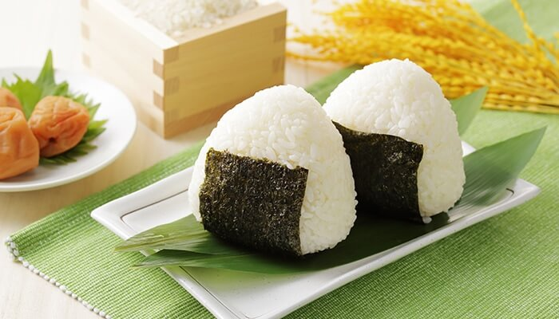

Onigiri

Descripción
Ideal para acompañar platos fuertes, el onigiri consiste en una bola o triángulo hecho de arroz y relleno con diversos ingredientes: salmón, atún, ciruela encurtida o kombu. Se caracteriza por tener un alga nori para agarrarla la bola sin que se desmorone la masa.
Ingredientes
- 2 tazas de arroz japonés cocido
- Láminas de alga nori
- 1 taza de atún con mayonesa
- Agua
- Sal
- Sésamo blanco
Elaboración de la receta
- Recorta las láminas de alga nori en pequeñas tiras que no pasen de los 10 cm de largo y 3 cm de ancho.
- Humedece tus manos en agua y espolvoréalas en un poco de sal y sésamo blanco.
- Toma una pequeña porción del arroz blanco y usa tus manos para dar forma al onigiri. Ya sea que quieras hacer una bola o un triángulo, es importante que dejes un espacio para colocar el relleno.
- Toma una cucharada del atún con mayonesa y rellena. Tapa con un poco más de arroz hasta que la bola o triángulo se vea compacto.
- Cubre la mitad inferior del onigiri con la tira de alga nori.
¡Que lo disfruten!